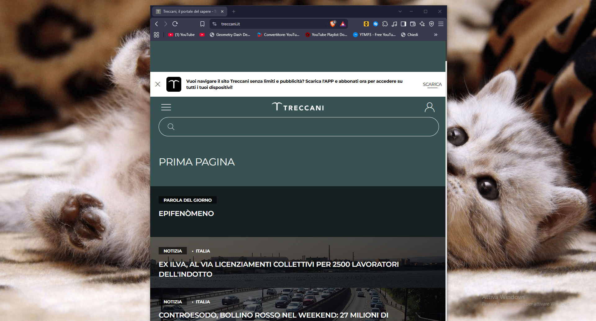
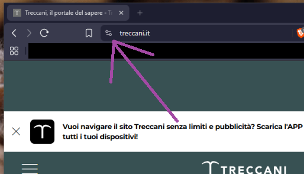
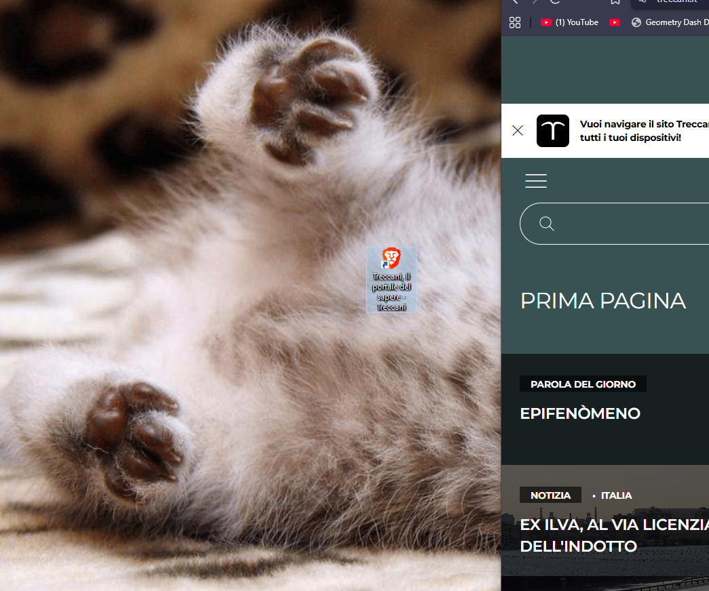
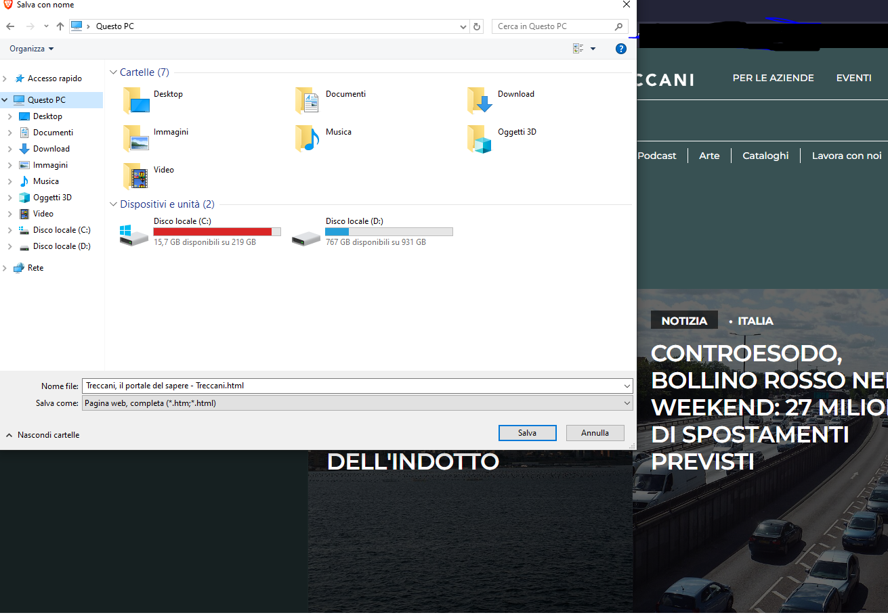

In this tutorial, I will help you learn how to save a web page on your computer.
There are several ways to do this, but we are going to use a universal method, because the procedure can be different depending on the Browser you are using, such as Brave, Firefox, Google Chrome, etc., and it can even change from one update to another. As I said, we are going to use a universal method, so regardless of which operating system you are using, I will guide you through the process. This way, you will be able to either save a direct shortcut to the website on your Desktop or save a web page locally on your computer. However, saving a page locally will not work correctly for every website, because some websites need additional files in order to work properly. With that said, in the next steps I will start helping you with this, beginning with how to save a direct shortcut to a website on your Desktop.
HOW TO SAVE A DIRECT SHORTCUT TO A WEBSITE ON YOUR DESKTOP
Saving a direct shortcut to a website on your Desktop is a very quick and intuitive process once you know how to do it.
To save a shortcut, first you need to be on the web page you want, for example: ( https://youtube.com ) | once you are on the desired page, you need to make your Browser window slightly smaller so that you can see both your Desktop and your Browser at the same time. It should look more or less like this:

Once you have positioned your window like this, you need to locate the padlock icon next to the place where you see the page's URL. The padlock may look slightly different depending on the Browser you are using, but its position is usually approximately the same. Here I have left you a picture to help you understand exactly what I am referring to:

Once you have found it, click and hold the padlock icon with your mouse, then drag it onto your Desktop. This will create a direct shortcut to the web page you are interested in.
Once you have done that, all that is left to do is test whether everything works correctly. If everything is working properly, you should find a shortcut file on your Desktop, usually with an HTML or Internet shortcut icon, something like this:
"Obviously, it will appear in the location where you placed it."

If something does not work, don't worry. Read through the steps carefully again and try following them once more. It is completely normal not to get everything right on the first try, especially when we are learning something new.
Now that we have seen how to save a direct shortcut to a website on our Desktop, let's see how to save a web page locally on our computer.
So, what is the difference between saving a page locally and creating a Desktop shortcut?
The main difference is that when you save a web page locally, you can access that page even when you are offline, without an Internet connection, because the files are stored locally on your computer and the page's code can therefore be loaded locally. On the other hand, saving a Desktop shortcut simply creates a shortcut that, when clicked, connects you directly to that website's web page, without having to search for the website again.
With that said, let's begin the procedure.
Unlike the previous procedure, this one may actually be simpler, although it is somewhat similar to the previous one. The only important thing to keep in mind is that this feature will not work perfectly with every website. Some websites, when saved locally, may only save the first page and not all of the additional files required by the website. This means that the locally saved page may not be able to retrieve information from those other files, which can cause the "local" version of the page to malfunction. With that said, let's begin the procedure.
As before, the first thing you need to do is go to the website you want. Once you are on the page you want to save locally, use this keyboard shortcut: hold down the left Ctrl key and press S. If you have done it correctly, a window will open asking you where you want to save the file:

Once you are in this window, choose where you want to save your file. Once you have selected the location, click Save. The file will then be saved in the selected location, where you will be able to find it later and open it or do whatever you want with it.
I hope this tutorial helped you understand how to save a website shortcut and how to save a web page locally on your computer. I also hope it helped you do what you were trying to do. Have a nice day, and see you in the next tutorial! :>